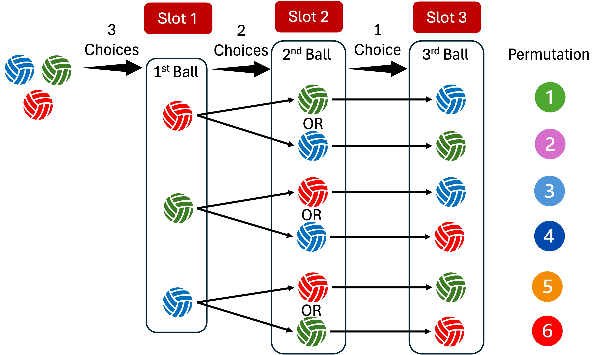
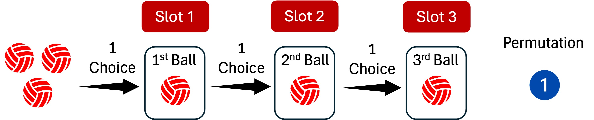

Click to show/hide code
factorial(4)[1] 24December 15, 2024
In the previous section, we discussed the classical approach to assign probabilities to events, where counting the number of favorable outcomes and the total number of outcomes is crucial.
When the number of outcomes is small, counting is straightforward, however, when the number of outcomes is large, counting can be challenging and tedious.
Therefore, we use combinatorics to provide a systematic way for counting.
Combinatorics is the branch of mathematics that deals with counting, arranging, and combining objects within finite sets.
Suppose that we have a set of \(4\) colored balls in a box: \(2\) red red balls \((R_1, R_2)\), \(1\) blue ball \((B)\), and \(1\) green ball \((G)\).
If we want to draw two balls from the box, then in how many different ways can we do this?
After drawing the first ball and before drawing the second ball, an important question to ask is whether we should put the first ball back in the box or not:
If we decide to put it back, then it is said that we draw with replacement (the ball which is drawn once is available for the next draw).
If we decide not to put it back, then it is said that we draw without replacement (if a ball is drawn once, it is not available for the next draw).
If we draw without replacement, then there are \(12\) ways to draw \(2\) balls as follows:
\(1.\ R_1, R_2\)
\(2.\ R_1, B\)
\(3.\ R_1, G\)
\(4.\ R_2, R_1\)
\(5.\ R_2, B\)
\(6.\ R_2, G\)
\(7.\ B, R_1\)
\(8.\ B, R_2\)
\(9.\ B, G\)
\(10.\ G, R_1\)
\(11.\ G, R_2\)
\(12.\ G, B\)
A second question to ask is whether the order of the balls matters or not:
The combination of \((G, B)\), for example, is different from the combination of \((B, G)\).
Considering the order, there are \(12\) ways to draw two balls without replacement as shown above.
The combination of \((G, B)\) is the same as the combination of \((B, G)\) as both result in a draw of \(1\) green and \(1\) blue ball.
Without considering the order, there are only \(6\) ways to draw two balls without replacement as shown below (distinct combinations are highlighted and listed in the left column, while the duplicates are struck through and listed in the right column):
\(1.\ R_1, R_2\)
\(2.\ R_1, B\)
\(3.\ R_1, G\)
\(4.\ R_2, B\)
\(5.\ R_2, G\)
\(6.\ B, G\)
\(7.\ \cancel{R_2, R_1}\)
\(8.\ \cancel{B, R_1}\)
\(9.\ \cancel{G, R_1}\)
\(10.\ \cancel{B, R_2}\)
\(11.\ \cancel{G, R_2}\)
\(12. \cancel{G, B}\)
This means the two red balls are indistinguishable making making the distinction between \(R_1\) and \(R_2\) irrelevant.
In this case, there are \(4\) ways to draw the two balls as shown below:
\(1.\ R, R\)
\(2.\ R, B\)
\(3.\ R, G\)
\(4.\ B, G\)
Therefore, replacement, order, and distinguishability are important factors to be considered when counting the number of ways to arrange objects from a set.
Assume that we are performing different random experiments, and each experiment has \(n_1, n_2, \ldots, n_k\) possible outcomes, respectively.
The multiplication principle states that the total number of outcomes for the combined experiments is the product of the number of outcomes for each individual experiment:
\[ \text{Total number of outcomes} = n_1 \times n_2 \times \ldots \times n_k \]
A company requires its employees to create a password for their computer accounts. The password must follow these rules:
It must be exactly \(8\) characters long.
The first character must be a special character (from a set of \(7\) allowed special characters).
The second character must be a digit (from \(0\) to \(9\)).
The remaining \(6\) characters can be any combination of letters (case-sensitive).
Answer:
The first character can be selected in \(7\) ways.
The second character can be selected in \(10\) ways.
The remaining \(6\) characters can be selected in \(52\) ways each (because the character is case-sensitive, and there are \(26\) uppercase and \(26\) lowercase letters in the English alphabet).
Therefore, the total number of possible passwords is:
\[ 7 \times 10 \times 52 \times 52 \times 52 \times 52 \times 52 \times 52 = \]
\[ 7 \times 10 \times 52^6 = 1,383,942,676,480 \]
A permutation is an arrangement of objects in a specific order (i.e., order matters).
For a set of \(n\) objects, each unique arrangement of \(r\) objects is called a permutation, where \(r \leq n\).
Suppose we have a set of three distinguishable balls, \(1\) red, \(1\) blue, and \(1\) green.
We are interested in finding the number of unique permutations (i.e., ordered arrangements) of the three balls without replacement.

As shown in the figure, there are \(6\) unique ways to arrange the three balls.
For the first ball, there are \(3\) available choices.
For the second ball, there are \(2\) choices left (the ball drawn in the first run is not available for the second slot).
For the third ball, there is only \(1\) choice left (the \(2\) balls drawn in the first and second runs are not available for the third slot).
Using the multiplication principle, the total number of unique permutations is calculated by multiplying the number of choices for each slot: \(3 \times 2 \times 1 = 6\).
The above rule can be generalized as follows:
The number of unique permutations of \(n\) distinguishable objects is given as:
\[ n \times (n-1) \times (n-2) \times \ldots \times 3 \times 2 \times 1 = n! \]
The term \(n!\) is read as \(n\) factorial and is defined as the product of all positive integers from \(1\) up to \(n\).
This can be written in mathematical notation as:
\[ _nP_n=n\times (n-1)\times (n-2) \times \ldots \times 1=n! \]
The number of unique permutations of \(r\) distinguishable objects is given as:
\[ n \times (n-1) \times (n-2) \times \ldots \times [n-(r-1)] \]
There are \(n\) choices for the first selection, \((n-1)\) choices for the second selection, and so forth until the last selection that always has \([n-(r-1)]\) choices left.
This can be written in mathematical notation as:
\[ _nP_r=n\times (n-1)\times (n-2) \times \ldots \times [n-(r-1)] = \frac{n!}{(n-r)!} \]
\(n\times (n-1)\times (n-2) \times \ldots \times [n-(r-1)] =\)
\(n\times (n-1)\times (n-2) \times \ldots \times (n-r+1) \xRightarrow{\text{multiply by}}\)
\(\frac{(n-r) \times (n-r-1) \times \ldots \times 2 \times 1}{(n-r) \times (n-r-1) \times \ldots \times 2 \times 1} \xRightarrow{\text{this becomes}}\)
\(\frac{n\times (n-1)\times (n-2) \times \ldots \times (n-r+1) \times (n-r) \times (n-r-1) \times \ldots \times 2 \times 1}{(n-r) \times (n-r-1) \times \ldots \times 2 \times 1}\xRightarrow{\text{reduces to}}\displaystyle \frac{n!}{(n-r)!}\)
When \(r = n\), the formula \(\displaystyle \frac{n!}{(n-r)!}\) reduces to \(n!\).
\(0! = 1\) by definition or convention.
The factorial of a number can be calculated in R using the factorial() function.
\(4!\):
\(5!\):
\(0!\):
Answer:
There are a total of \(6\) distinguishable letters.
Consider the example of the three balls (\(1\) red, \(1\) red, and \(1\) red) that we discussed above.
Now, we want to arrange the three balls but with replacement.
This means that after each draw, the ball is put back in the box and is available for the next draw.
For the first slot, there are \(3\) choices.
For the second slot, there are \(3\) choices because the first ball is put back in the box and is available for the next draw.
For the third slot, there are \(3\) choices as well.
So, the total number of unique permutations with replacement is \(3 \times 3 \times 3 = 27\).
This can be generalized as follows:
The number of unique permutations of \(n\) distinguishable objects with replacement is given as:
\[ n^r \]
\(n\) is the total number of objects and \(r\) is the number of objects to be arranged and \(r \leq n\).
Answer
Suppose we have a set of \(3\) indistinguishable red balls.
We are interested in finding the number of ways to arrange the \(3\) balls.

As shown in the figure, there is only \(1\) way to arrange the three balls because they are indistinguishable and can be swapped without changing the arrangement (i.e., swapping positions does not create any new unique arrangement).
There is only \(1\) way to arrange the three indistinguishable balls regardless the draw is with or without replacement.
There are some scenarios, where we have multiple distinguishable groups but the objects within each group are indistinguishable.
For example, we may be interested in finding the number of ordered arrangements (permutations) that can be formed from the letters in the word STATISTICS?
The word STATISTICS has \(10\) letters, where the letter S appears \(3\) times, the letter T appears \(3\) times, the letter I appears \(2\) times, the letter A appears \(1\) time, and the letter C appears \(1\) time (i.e., there are \(5\) distinct letter groups but the letters within each group are indistinguishable).
If all letters were distinct, the number of permutations without replacement would be \(10!\).
However, since some letters are repeated, we need to adjust the number of permutations because swapping the positions of the repeated letters does not create new unique arrangements. For instance, when the \(3\) S’s fill positions \(4\), \(7\), and \(9\) in a permutation, it does not matter which S is in which position.
This adjustment can be done by dividing the total number of permutations if all letters were distinct by the number of ways the indistinguishable letters can be swapped.
For the \(3\) S’s, there are \(3!\) ways to swap them without changing the arrangement, for the letter I, there are \(2!\) ways to swap them, and so forth.
Therefore, the number of unique permutations that can be formed from the letters in the word STATISTICS is:
\[ \frac{10!}{3! \times 3! \times 2! \times 1! \times 1!} = 50,400 \]
Formula:
To generalize the above rule, assume we have \(k\) distinct groups of objects, where the groups contain \(n_1, n_2, \ldots, n_k\) indistinguishable objects and the total number of objects \(n = n_1 + n_2 + \ldots + n_k\).
The number of unique permutations is given as:
\[ \frac{n!}{n_1! \times n_2! \times \ldots \times n_k!} \]
How many permutations can be formed from the letters in the word BANANA?
The answer is permutations.
Heumann, C., Schomaker, M., and Shalabh (2022). Introduction to Statistics and Data Analysis: With Exercises, Solutions and Applications in R. Springer
Daniel, W. W. and Cross, C. L. (2013). Biostatistics: A Foundation for Analysis in the Health Sciences, Tenth edition. Wiley
Penn State University. STAT 414: Introduction to Probability Theory. Online Statistics Education. Retrieved December 02, 2024, from https://online.stat.psu.edu/stat414